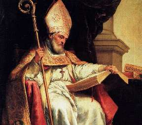

Борис Акунин
Мой календарь
Смотрим внимательно на святого пастыря, изображенного великим Мурильо.
Это святой Исидор, архиепископ Севильский, живший в VI–VII веках. Мы все должны ему молиться и просить о заступничестве. Особенно, если сломался компьютер или надо восстановить важный файл.
6 февраля 2001 года постановлением папы Иоанна-Павла II святой Исидор назначен патроном и покровителем программистов, Интернета и вообще информатики.
Почему?
Ну, что айтишники тоже люди и нуждаются в святом заступничестве, это понятно. Чем они хуже других? Однако почему именно архиепископ Севильский, подданный готского королевства?
Вероятно, потому что Исидор был самым образованным (то есть самым информированным) человеком своей эпохи - вот она, информатика. А кроме того всячески продвигал ученость и образование во времена, когда это было, скажем так, немодным.
Итак, запомните. Если вы куда-то нажали и всё исчезло, не паникуйте. Молитесь святому Исидору. Он поможет.